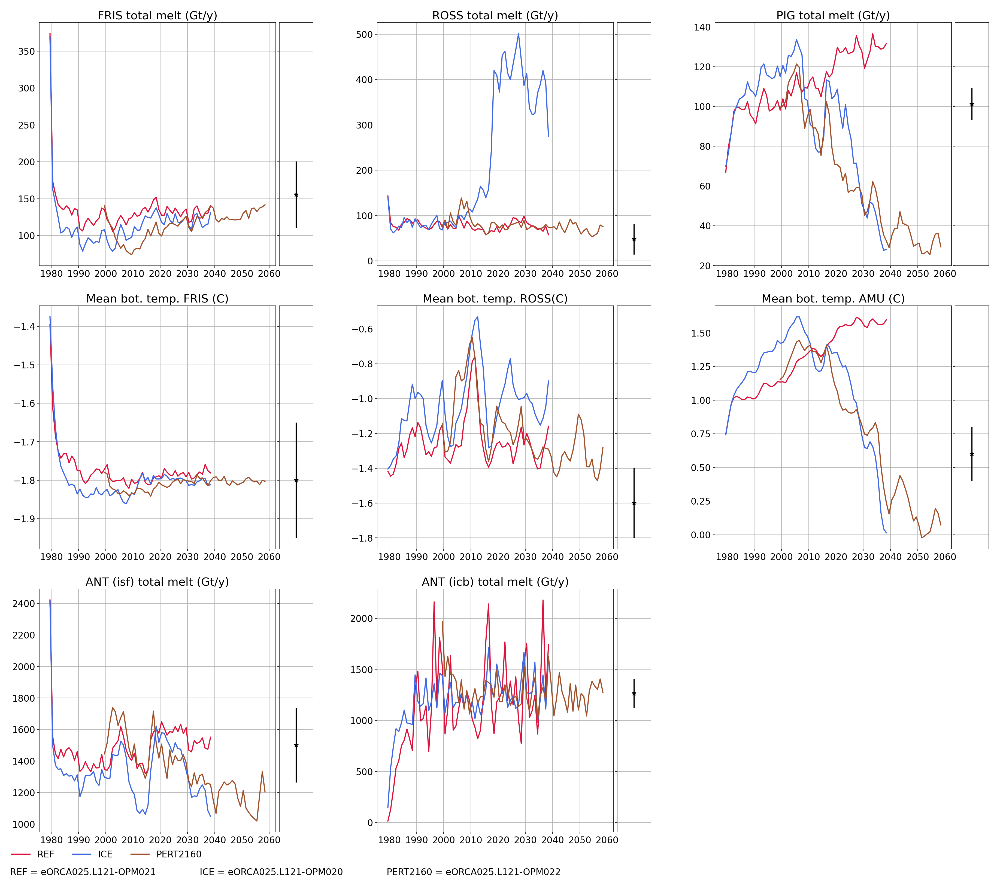
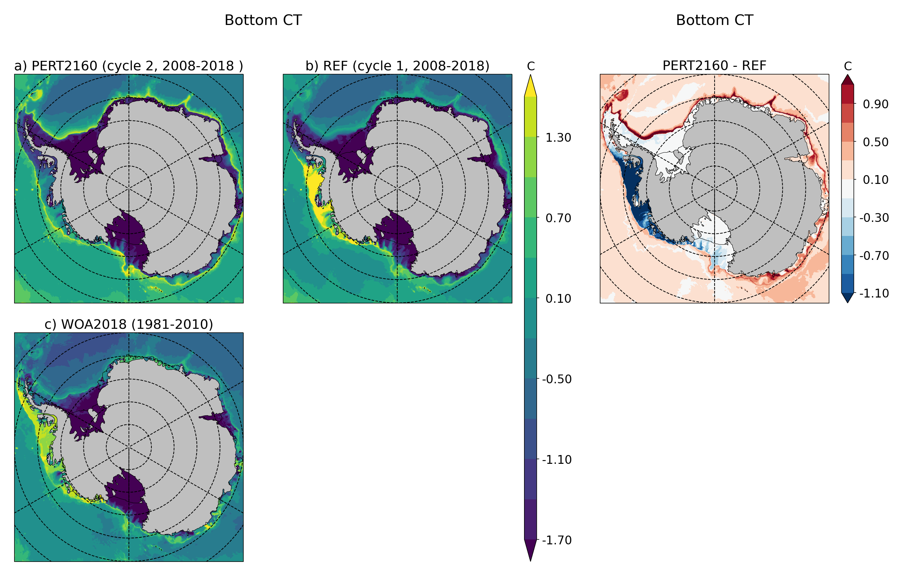
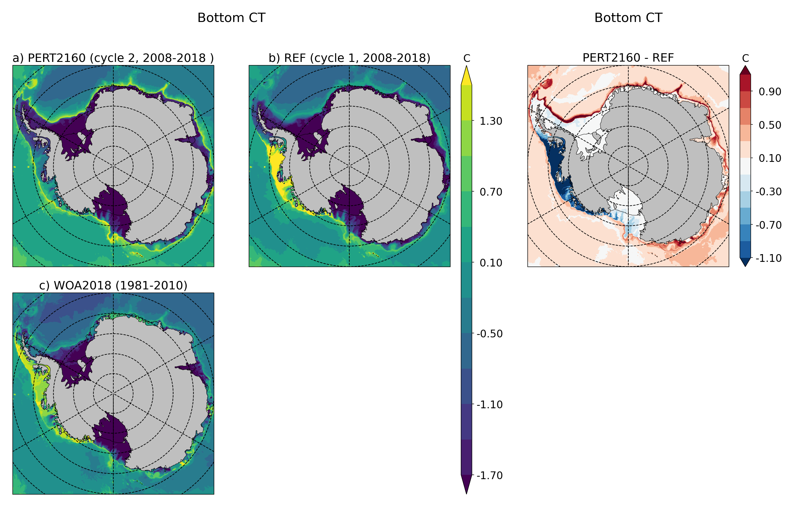

eORCA025.L121-OPM022¶
Summary¶
Compare to eORCA025.L121-OPM021, we perturb the JRA forcing by adding the A1B HadCM3 2160-2199 wrt 1979-2018 anomaly.
Namelist¶
Only the change compare to the reference (eORCA025.L121-OPM021) a mentioned in the next sections.
namelist_oce¶
!-----------------------------------------------------------------------
&namsbc_blk ! namsbc_blk generic Bulk formula (ln_blk =T)
!-----------------------------------------------------------------------
! ! bulk algorithm :
ln_NCAR = .true. ! "NCAR" algorithm (Large and Yeager 2008)
ln_COARE_3p0 = .false. ! "COARE 3.0" algorithm (Fairall et al. 2003)
ln_COARE_3p5 = .false. ! "COARE 3.5" algorithm (Edson et al. 2013)
ln_ECMWF = .false. ! "ECMWF" algorithm (IFS cycle 31)
!
rn_zqt = 2. ! Air temperature & humidity reference height (m)
rn_zu = 10. ! Wind vector reference height (m)
ln_Cd_L12 = .false. ! air-ice drags = F(ice concentration) (Lupkes et al. 2012)
ln_Cd_L15 = .false. ! air-ice drags = F(ice concentration) (Lupkes et al. 2015)
ln_taudif = .false. ! HF tau contribution: use "mean of stress module - module of the mean stress" data
rn_pfac = 1. ! multiplicative factor for precipitation (total & snow)
rn_efac = 1. ! multiplicative factor for evaporation (0. or 1.)
rn_vfac = 0. ! multiplicative factor for ocean & ice velocity used to
! ! calculate the wind stress (0.=absolute or 1.=relative winds)
cn_dir = './'
!_______!__________________!___________________!___________!_____________!_________!___________!______________________________!__________!______!
! ! file name ! frequency (hours) ! variable ! time interp.! clim ! 'yearly'/ ! weights filename ! rotation ! lsm !
! ! ! (if <0 months) ! name ! (logical) ! (T/F) ! 'monthly' ! ! paring ! !
!_______!__________________!___________________!___________!_____________!_________!___________!______________________________!__________!______!
sn_wndi = 'drowned_uas_JRA55_perturbed_A1B_HadCM3_21602200-19792019_anomaly' , 3. , 'uas' , .true. , .false. , 'yearly' , 'eORCA025_JRA55_do_c3.0_weights_bicubic.nc' , 'U1' , ''
sn_wndj = 'drowned_vas_JRA55_perturbed_A1B_HadCM3_21602200-19792019_anomaly' , 3. , 'vas' , .true. , .false. , 'yearly' , 'eORCA025_JRA55_do_c3.0_weights_bicubic.nc' , 'V1' , ''
sn_qsr = 'drowned_rsds_JRA55_perturbed_A1B_HadCM3_21602200-19792019_anomaly' , 3. , 'rsds' , .true. , .false. , 'yearly' , 'eORCA025_JRA55_do_c3.0_weights_bilin.nc' , '' , ''
sn_qlw = 'drowned_rlds_JRA55_perturbed_A1B_HadCM3_21602200-19792019_anomaly' , 3. , 'rlds' , .true. , .false. , 'yearly' , 'eORCA025_JRA55_do_c3.0_weights_bilin.nc' , '' , ''
sn_tair = 'drowned_tas_JRA55_perturbed_A1B_HadCM3_21602200-19792019_anomaly' , 3. , 'tas' , .true. , .false. , 'yearly' , 'eORCA025_JRA55_do_c3.0_weights_bilin.nc' , '' , ''
sn_humi = 'drowned_huss_JRA55_perturbed_A1B_HadCM3_21602200-19792019_anomaly' , 3. , 'huss' , .true. , .false. , 'yearly' , 'eORCA025_JRA55_do_c3.0_weights_bilin.nc' , '' , ''
sn_prec = 'drowned_tprecip_JRA55_perturbed_A1B_HadCM3_21602200-19792019_anomaly', 3. , 'tprecip', .true. , .false. , 'yearly' , 'eORCA025_JRA55_do_c3.0_weights_bilin.nc' , '' , ''
sn_snow = 'drowned_prsn_JRA55_perturbed_A1B_HadCM3_21602200-19792019_anomaly' , 3. , 'prsn' , .true. , .false. , 'yearly' , 'eORCA025_JRA55_do_c3.0_weights_bilin.nc' , '' , ''
sn_slp = 'drowned_psl_JRA55_perturbed_A1B_HadCM3_21602200-19792019_anomaly' , 3. , 'psl' , .true. , .false. , 'yearly' , 'eORCA025_JRA55_do_c3.0_weights_bilin.nc' , '' , ''
sn_cc = 'NOT USED' , 24. , 'CC' , .false. , .false. , 'yearly' , '' , '' , ''
sn_tdif = 'NOT USED' , 24. , 'taudif' , .false. , .true. , 'yearly' , 'eORCA025_JRA55_do_c3.0_weights_bilin.nc' , '' , ''
/
Monitoring¶
Global indicators¶
On these plot you can find a time series of:
ACC transport
AMOC at rapid array
AMHT at rapid array
Net global heat fluxes
mean sst in the southern ocean (see box in the map)
mean sst in the North West Corner (see box in the map)
sea ice extent (arctic/ant in summer/winter)
Regional indicators¶
On these plot, you can find time series of:
ACC transport
Maximum of the Weddell and Ross Gyre (box where the max compute show in the map)
Mean bottom salinity over the main dense water formation hot spot (West Ross and West FRIS)
Mean bottom temperature over East Ross and Amudsen sea to monitor CDW intrusion
Local indicators¶
These plots monitor the evolution of ice shelf melting and the corresponding shelf properties (ROSS, FRIS, PINE, GETZ)
Amundsen/Belingshausen seas¶
These plot monitoring the evolution of temperature, salinity and ice shelf melt in Amundsen sea.

 

{kind=link}
{kind=link}
{kind=link}